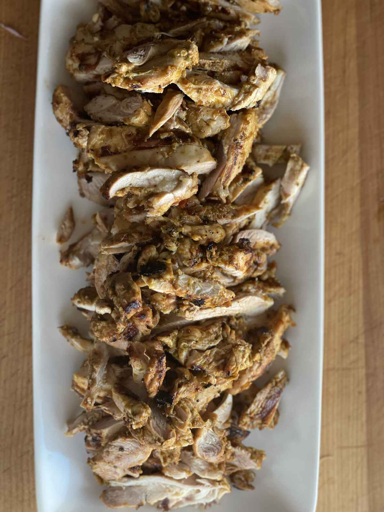
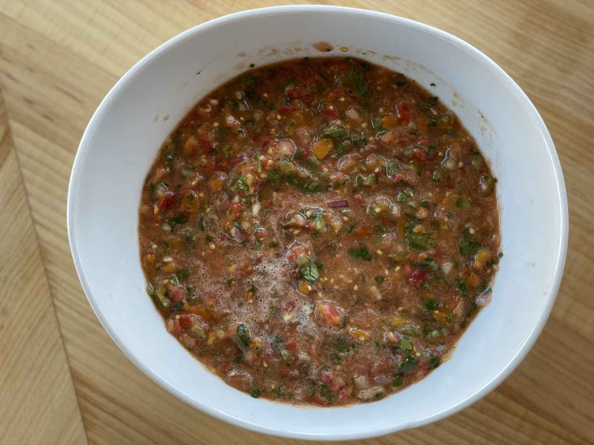
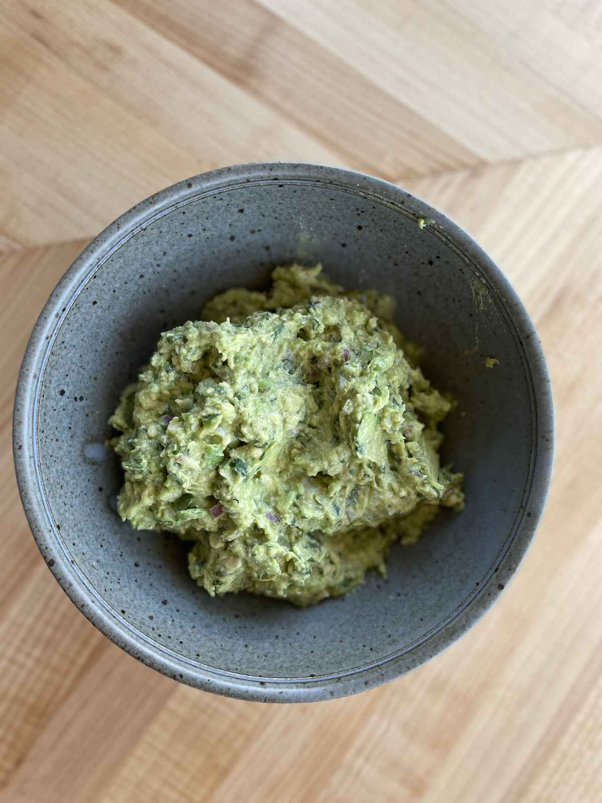

Chicken Fajitas
We have had a spate of fantastic weather recently here in Seattle which means it’s been clobbering grilling time because as I intoned earlier, I would much rather be sweating outside over something hot than sweating inside over something hot. And lets face it, I’m always going to be sweating so might as well choose the venue, right? And if you’re going to be grilling, you can’t really go wrong with making fajitas. Ok, I suppose you could. You could make like liver or brain fajitas? Those two things are some of the only foods I won’t eat ever again. So if you made fajitas out of them, I’d think they’d have gone wrong. But like whatever floats your boat. You want to eat brain fajitas, feel free. I’ll just be over here watching you. Judging you. Silently saying “you’re a smart motherfucker, that’s right”.
Wait.
Lets try this again. First I got side-tracked by The Thing, and then with the brains and I haven’t even really fucking swore yet.

So yeah, I made some chicken fajitas! And much to my wife’s chagrin I used chicken thighs! THE FUCKING HORROR. (And don’t tell me they’re supposed to be made with steak. I’m making them. Like I said before you want to make them with brains be my guest, but I used chicken.) Thighs are perfect for this since you can get them skinless and boneless (because, hey, what can I say, I’m sweaty AND fucking lazy), and they don’t dry out like white meat chicken does. I made a quick marinade for them with some canned chipotle peppers, cilantro stems, onion, garlic, cumin, coriander, smoked paprika, olive oil, salt, and jalapeños whizzed up in the blender and let them chill for a few hours while I made guacamole (again) and some blender salsa since the blender was already out and like fuck it, cutting tiny tomatoes is really goddamn boring. (The salsa and the marinate were almost identical in ingredients, I just added some tomatoes to the other half of the ingredients for the marinade.)

(And I still didn’t even put a goddamn pea in my guacamole.)
But, if you really had to ask, what did I make chicken fajitas?
Because. Well. Are you ready?
You might need to take a seat.
Are you sitting?
MY.
MOTHERFUCKING.
CHILDREN.
WILL.
MOTHERFUCKING.
EAT.
MOTHERFUCKING.
FAJITAS.
That’s right. THEY ATE CHICKEN. ON A FLOUR TORTILLA. ONE OF THEM NEEDED A LITTLE SOUR CREAM. THE OTHER ONE ATE SOME OF THE PEPPERS AND ONIONS TOO.
To be honest I’m surprised I don’t make them more often.

Lets quickly talk about the part of the meal that I didn’t photograph: the peppers and onions. (I mean, besides the sour cream. If you need a picture of sour cream to visualize dinner you’ve got some deeper fucking problems than this blog can help you with.) The problem with most peppers and onions you get with fajitas is either they’re limp, greasy and/or under seasoned. The solution to this is to start cooking them before you put the meat on, and to cook them in a dumb hot cast iron skillet. I put mine on my grill when I start the grill so that the pan is like fuck you hot when I go to add the peppers. Also season the fuck out of them. Like add about one and a half times as much salt as you think you’re going to need. And then LEAVE THEM THE FUCK ALONE. Let them get brown — this means you can’t poke at them and stir them every two seconds, you gotta just let them be. And don’t be giving me any of those fucking under ripe green-ass bell fucking peppers. You’re paying almost as much as the red ones, but you’re like totally getting ripped off with a less-ripe, grassy-ass product.